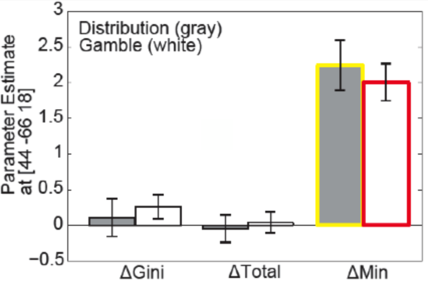
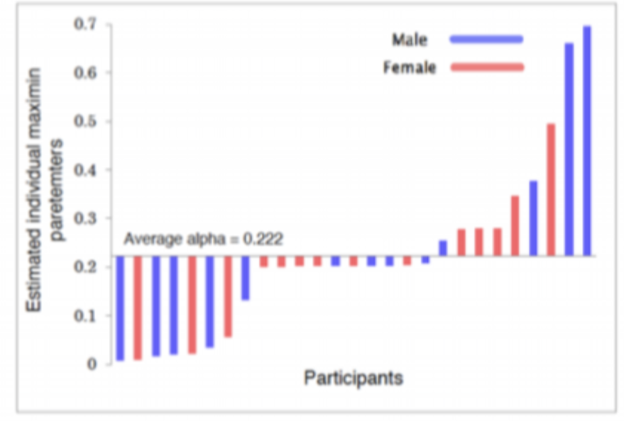

Research 02
Justice and Social Values
2. Understanding neuro-cognitive bases for “justice” and “social values”
As exemplified by the “Occupy Wall Street” protest and the proliferation of similar protests across the world, conflicts in values including how to distribute wealth and resources represent one of the most urgent political problems faced by modern societies. This project aims to investigate the behavioral, cognitive and neural processes underlying human value judgments about how we should construct our societies. We investigate how social values are acquired and maintained through a combination of techniques including computational models, behavioral experiments, fMRI, eye-tracking and the measurement of physiology and hormonal responses. Ultimately our aim is to combine empirical (“be”, “do”) findings derived from such methodologies with normative (“should”) theories about social values, which have been developed in the humanities and social sciences.  
JST Strategic Basic Research Programs (CREST) "An exploration of the principle of emerging interactions in spatiotemporal diversity" (PI Prof. Ichiro Tsuda, 2017-2023)